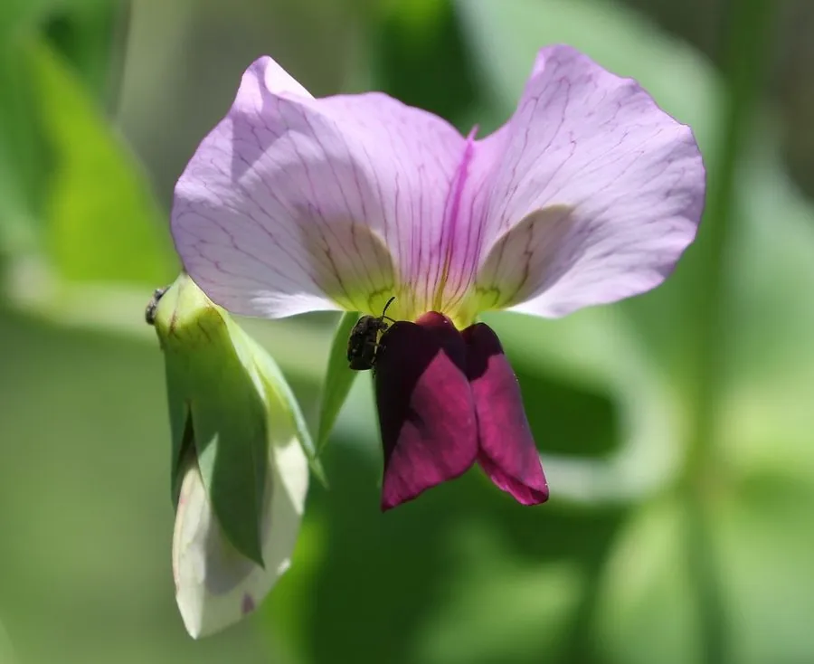

农作物与经济植物 · 植物界
豌豆 Pisum sativum

豌豆的嫩荚和嫩豆可作蔬菜，干豆可煮食或制淀粉，是古老的豆类作物，栽培历史可追溯到数千年前。
- 分类
- 门被子植物门纲双子叶植物纲目豆目科豆科属豌豆属
- 栖息环境
- 温带平原与高原，喜凉爽湿润，不耐高温
- 地理分布
- 原产地中海与西亚，现中国、印度、美国、俄罗斯等地广泛栽培
- 保护级别
- 暂无评估（栽培作物）
物种志
豌豆是一年生或二年生草本，株高 0.3–2 m，茎直立或蔓生，中空，有卷须。叶片为偶数羽状复叶，顶端小叶退化成卷须，托叶大而抱茎。花白色或紫色，蝶形，单生或簇生。荚果扁平或圆筒形，内含 4–10 粒种子，种子圆球形，有白、黄、绿、褐等色。根系有根瘤。
豌豆原产地中海、西亚一带，栽培历史约 8000–9000 年，是世界上最古老的栽培作物之一，后传入中国，如今各地均栽培。它喜凉爽湿润气候，不耐高温，适宜在疏松肥沃的土壤中种植，生育期较短。豌豆嫩荚（荷兰豆）、嫩豆粒可炒食、做汤、速冻，干豆可煮食、磨粉、制淀粉和粉丝；豆苗（豌豆苗）也是常见蔬菜。豌豆根瘤能固氮，常与禾谷类轮作。
形态与习性
- 株高0.3–2 m，茎中空有卷须
- 叶偶数羽状复叶，顶端为卷须
- 花白色或紫色蝶形花
- 荚果扁平或圆筒形
- 用途嫩荚、嫩豆、干豆与豆苗
- 特性根瘤固氮，生育期短
趣味知识
- 荷兰豆的嫩荚可以整个炒食，是豌豆的一个荚用品种。
- 豌豆的复叶顶端小叶退化成卷须，帮植株攀爬。
- 豌豆约 8000 年前在地中海一带被驯化，是古老作物之一。